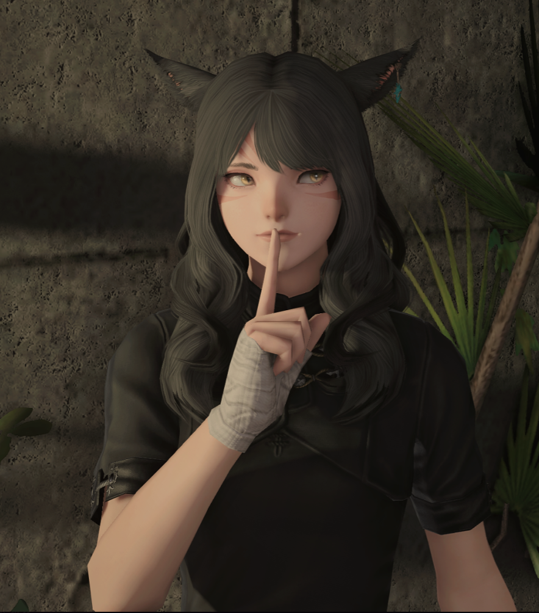
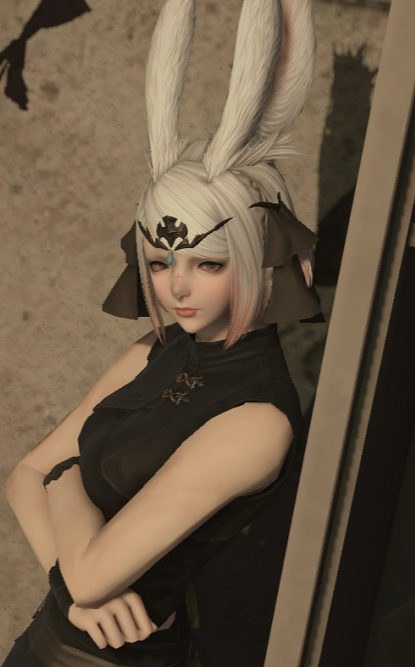
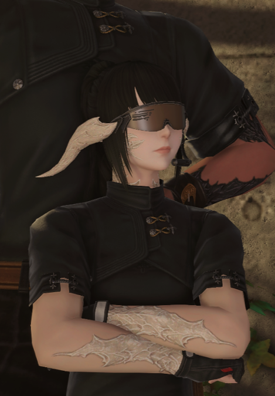
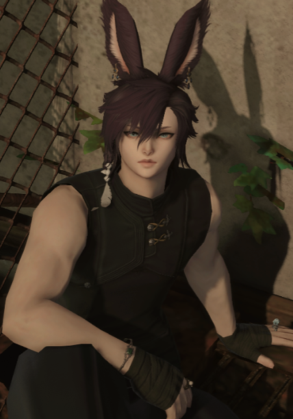
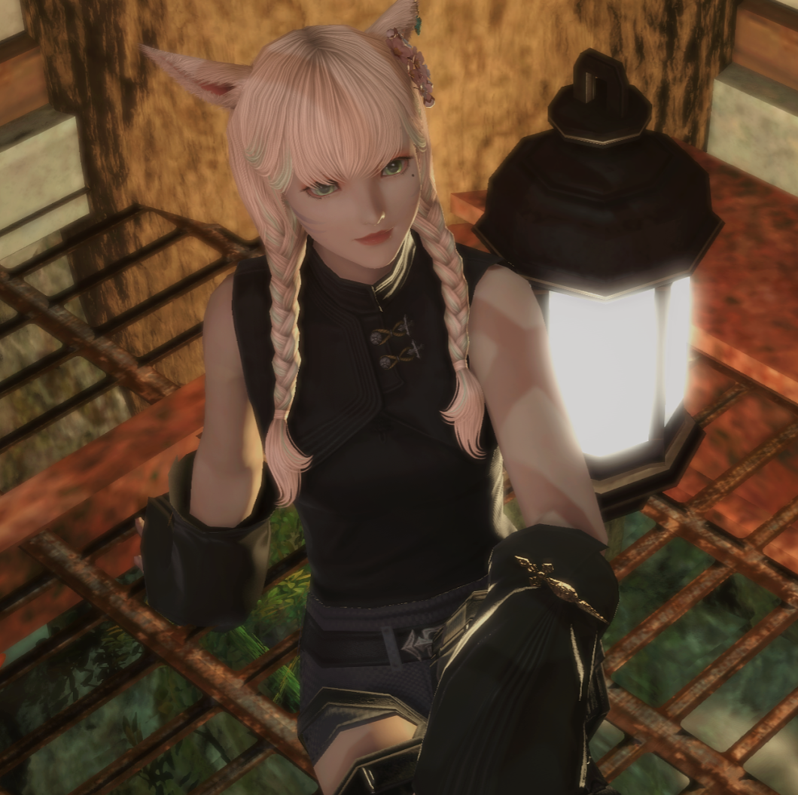
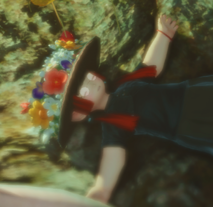
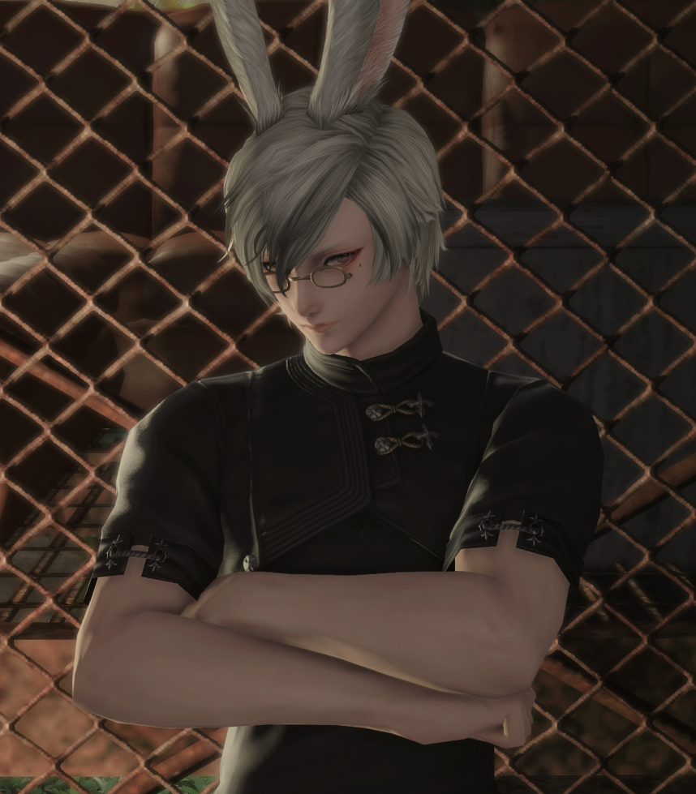
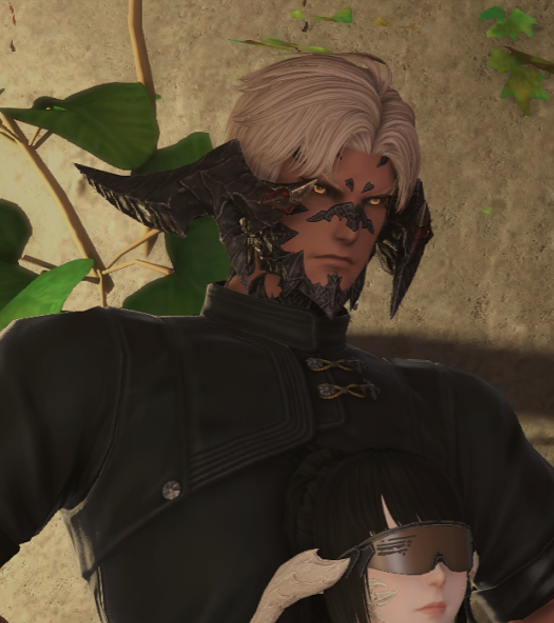

拾荒人
店長｜下限無底
災難後成為了拾荒人，
擅於蒐集有用的物資並撈回安全屋，但有時候會撿一些莫名奇怪的東西回來。
有車人士但常態性危險駕駛。
──這個要帶回去，那個也是......你說它們是垃圾？那是我的寶貝欸！
服務項目: 指名

拾荒人
災難後成為了拾荒人，
擅於蒐集有用的物資並撈回安全屋，但有時候會撿一些莫名奇怪的東西回來。
有車人士但常態性危險駕駛。
──這個要帶回去，那個也是......你說它們是垃圾？那是我的寶貝欸！
服務項目: 指名

外科醫生
曾遊歷帝國行省並學習不過於依賴魔法的治癒技術，
擅於操作各種小巧工具進行治療，並在災難後與竹馬一同遷移至安全屋。
待人接物優雅柔和，偏好味道清爽的料理。
──別怕，會先給你上止痛藥的。
服務項目: 指名
狙擊手
有玩弄獵物的惡趣味，擅長潛伏與長時間觀測，標記、壓制、干擾——讓敵人一步步走向無法逆轉的結局。
追隨姐姐艾蕾爾的腳步前往安全屋，並開始長駐該處。
──逃吧，獵物要掙扎才有狩獵的樂趣
服務項目: 指名

狙擊手
她的子彈，總是最先到達，從沒失誤過。傳聞她能透過風中微弱的波動，預判目標的位置與移動——就像是在「狩獵命運」本身。因丈夫的原因得知安全所的存在，厭倦了長期的漂泊生活而將其視為「家」。
──任務完成就好，過程怎樣我不在意
服務項目: 指名

終末武士
舊時代武士道最後傳承者，堅守遠東最後的武士道精神。
在災難後見證了無數紛爭和死亡，並前往安全屋，
跟Lenei共處一室的時候會化身冷面笑匠，意外地喜歡小動物。
──那是我的武士刀，不是你的手術刀！
服務項目: 指名

園藝師
原是田園郡備受寵溺的園藝學徒， 災情後尋找落腳處的途中受到午餐香味吸引，忍不住衝入安全屋並吃掉餐點， 被老闆索償，並為了確保穩定的五餐而留下。
──你說那朵花很漂亮？笨蛋！那是菜心！
服務項目: 指名

末日送貨員
大多數乙太之光已被阻斷、風路與水路亦不再安全，人類尚能依賴的只有原生能源與雙足，蘋果從年邁的父母手中接過運輸者的使命，持續往返各地提供物資支援。不問內容，只負責送達。
──嘿嘿 ! 蘋果快遞員準時抵達 !
服務項目: 指名

維修工程師
雖然態度偏消極，但承蒙如今世道的磨難，似乎對所謂的完滿有難以言喻的執著，只要他出手，總能讓各類殘存設備重新運作。
──在這個希望不復存在的時代，我能做的也只有這樣修修補補而已。
傭兵
避姓名不談，為了方便而讓人以「大獅」代稱。擅長擒拿，厭惡來自死角的肢體接觸，很偶爾才會來這打雜換幾份餐食。
──拿錢辦事罷了，還是你也有什麼想委託我的？

傭兵
行商路上被夫人救下，夫人至上主義，但二人聚少離多，情感無處寄放， 愛好酒精，得知有能提供正常酒飲的餐館後，經常於此消磨時間。
──好想老婆......